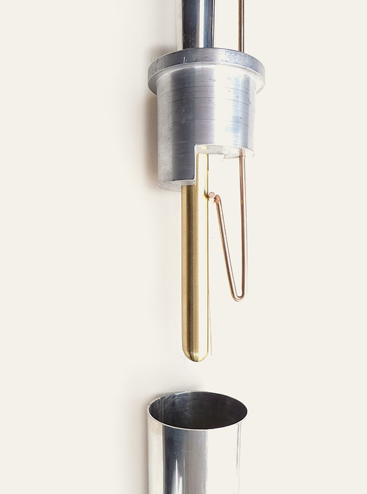
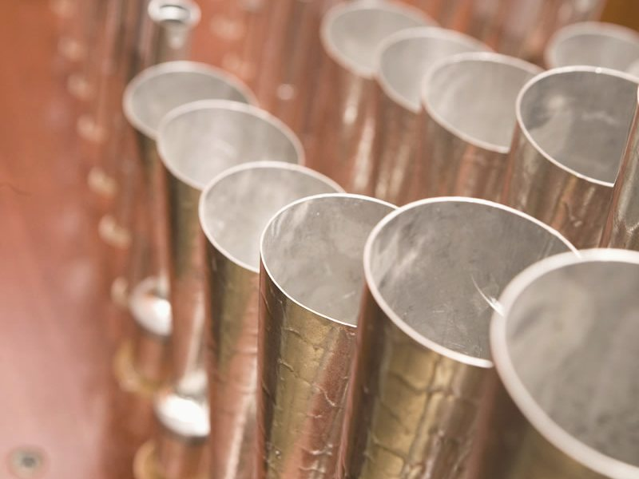
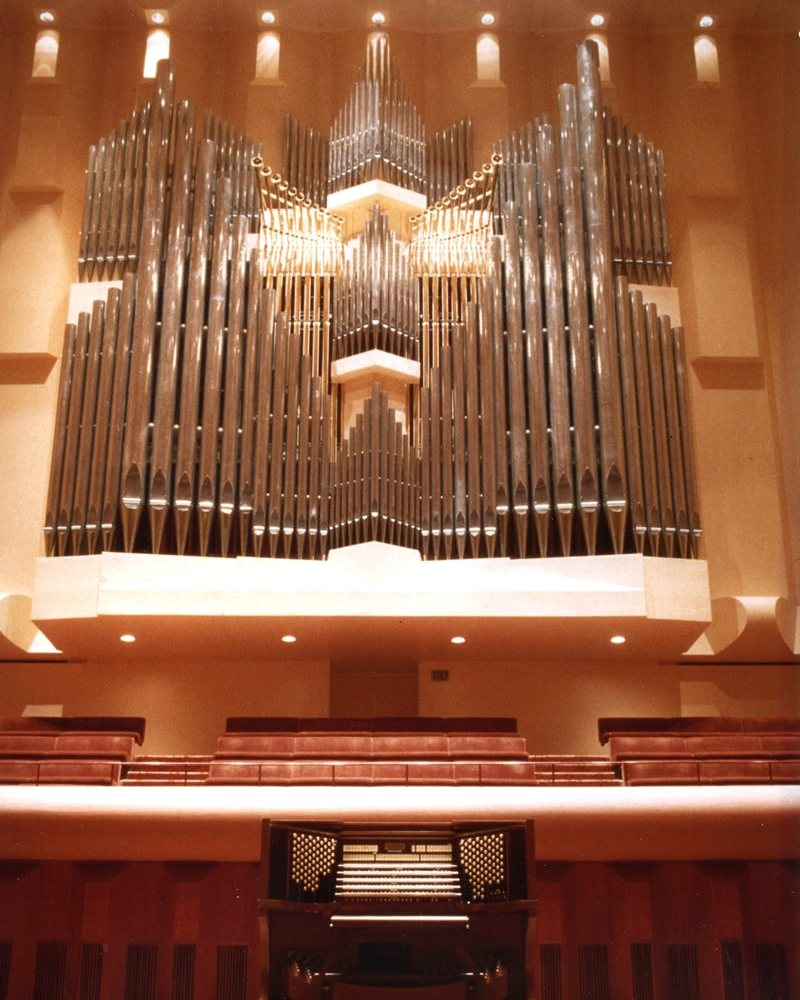
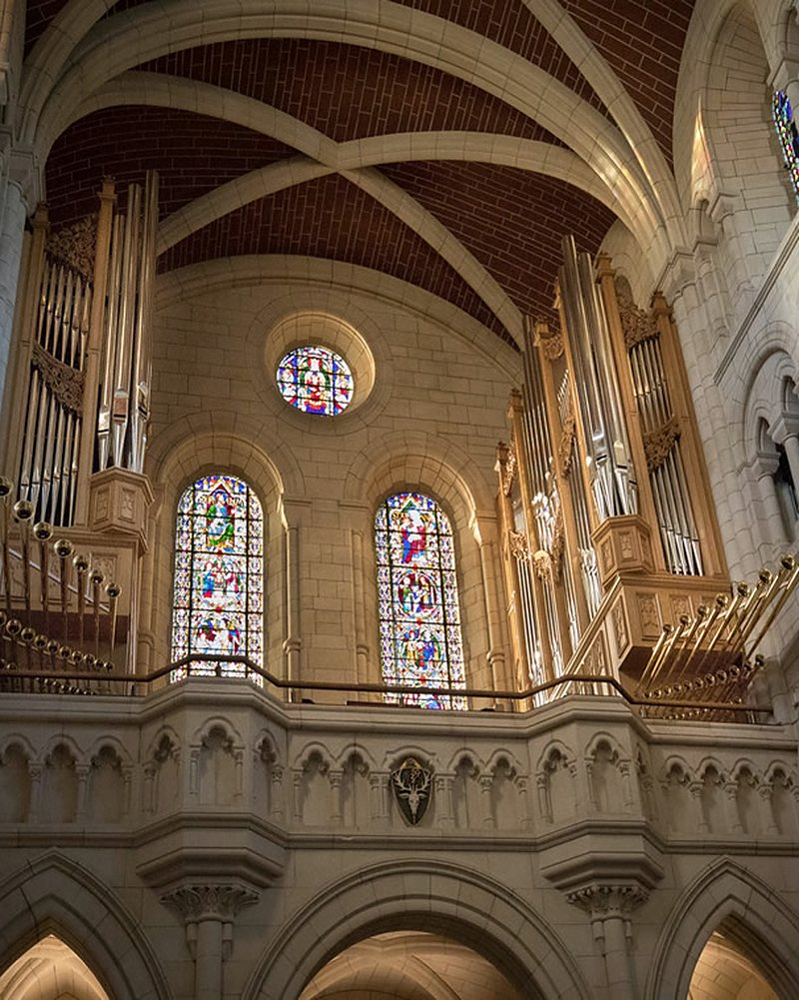
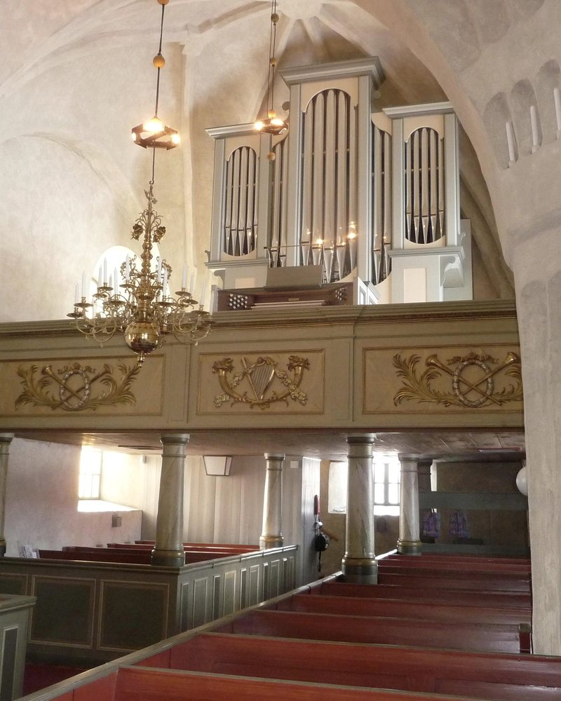
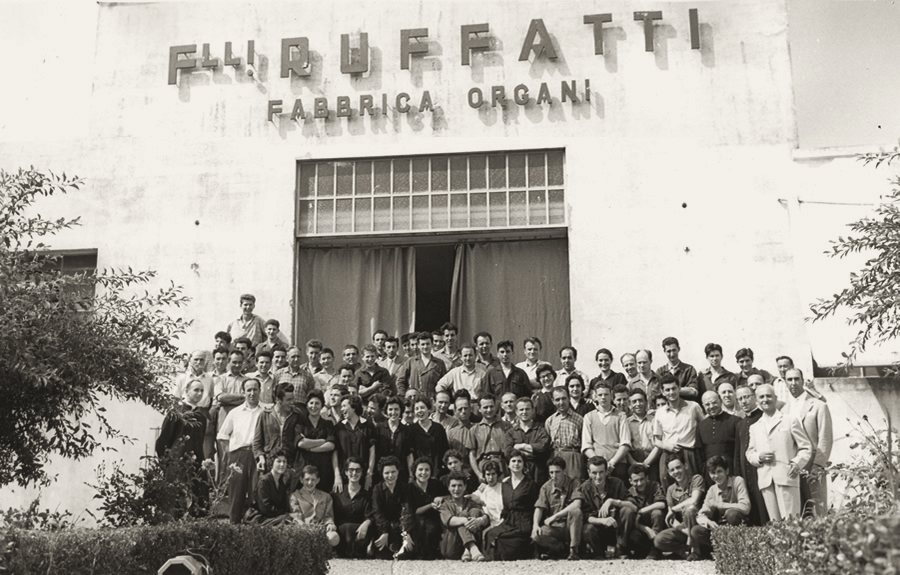
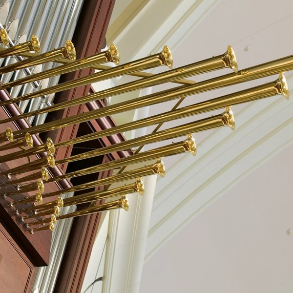

Tutte le canne, costruite in casa
Organi a canne nuovi e restauri, a Padova dal 1940.

Il metallo per le noci viene fuso manualmente con metodi antichi. Dopo la fusione, ogni noce viene singolarmente tornita.
I canaletti sono lavorati alla fresa per praticare l'apertura frontale; i fondi sono poi saldati con barre d'argento.
Ciascuna noce viene adattata al proprio piede, per ottenere il massimo di precisione e la stabilità dell'accordatura.
Ogni componente possibile, in laboratorio
Ben pochi organari costruiscono ancora le loro canne. Qui si fondono le lastre, si tornano le noci, si stagiona il legno: dai somieri alle canne ad anima e ad ancia, fino ai particolari più minuti.

Il 95 % di stagno nelle canne di facciata
Più stagno vuol dire più solidità, un aspetto più brillante e più armonici superiori nel suono. Le lastre si colano su un banco di marmo molto spesso.
Mogano sipo, stagionato cinque anni
Si contrae e si espande meno della metà del rovere. Certificato FSC, tagliato al quarto e stagionato naturalmente nel nostro laboratorio.
Pannelli da 48 mm per la cassa espressiva
Rifiniti in mogano e provati nei laboratori del Fraunhofer-Institut, per la cassa espressiva iperdinamica nata dalla nostra ricerca sul suono.
Realizzazioni
«Ogni organo è diverso, perché richiede sempre l'interazione con un luogo specifico»

Davies Symphony Hall
San Francisco, Stati Uniti
Cinque tastiere, 1984.

Abbazia di Buckfast
Devon, Regno Unito
Il primo grande organo Ruffatti per il Regno Unito: cento file di canne, due consolle a quattro tastiere, consegnato tra il 2017 e il 2018.

Chiesa di Boteå
Sollefteå, Svezia
Due tastiere, trasmissione meccanica con tiranti in fibra di carbonio.
Oltre 500 organi in Italia e oltre 50 negli Stati Uniti. Il più grande, a sei tastiere, è nella Basilica di Santa Maria la Nova a Monreale.
Tutte le realizzazioniTre generazioni di organari

La famiglia
Nel 1940 i fratelli Alessio, Antonio e Giuseppe fondano la Famiglia Artigiana Fratelli Ruffatti. Dal 1968 la guidano Piero e Francesco, figli di Antonio; dal 2004 lavora con loro Michela, architetto.
Piero e Francesco Ruffatti, Maestri d'Arte e Mestiere 2020.
Il restauro
Da mezzo secolo restauriamo organi antichi, in Italia e all'estero: oltre un centinaio. Nei primi anni Sessanta siamo stati fra le prime case organarie italiane a tornare all'organo meccanico.
La tradizione è forte solo se continua ad evolversi
- 049 750 666
- organs@ruffatti.com
- Via Facciolati 166, 35127 Padova
- Apri la mappa
